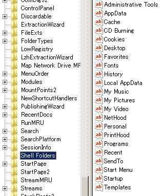

Option Explicit
'■簡易バイナリリーダー
Sub putBinStr() ' As Byte()
'テキストファイル test.txt の中身
'モグ[改行]モコ[改行]マコ
'--------------------------------
Dim myPath As String
Dim io As Integer
Dim buf() As Byte
Application.DefaultFilePath = ThisWorkbook.Path
myPath = "test.txt"
io = FreeFile()
'--------------------------------
'For Binary で Openすると
'規定のコードページ（文字コード）
'が得られる。日本語環境だと Shift_JIS
'が得られる という意味だと思う。
'--------------------------------
Open myPath For Binary As #io
'--------------------------------
'LOF関数はファイルのバイト長を返す
'--------------------------------
ReDim buf(1 To LOF(io))
'--------------------------------
'Getの第二引数は何バイト目から取得するかの指定
'２バイト目から取得したいなら
'バリアント型で 2 と指定する。
'--------------------------------
'--------------------------------
'バイト型の配列で Get すると
'ループの必要が無い。
'つまり高速に動作する
'--------------------------------
Get #io, , buf
Dim v As Variant
Dim strHex As String
Dim strDec As String
Dim cnt As Long
For Each v In buf
cnt = cnt + 1
If cnt Mod 2 Then
strHex = "&h" & Hex(v)
strDec = Format$(v, "@@@")
Else
strDec = strDec & " " & Format$(v, "@@@")
strHex = strHex & Hex(v)
Debug.Print strDec, strHex, Chr(strHex)
strHex = ""
strDec = ""
End If
Next
'テキストから取得したBinaryデータは
'vbUnicode指定で２バイト文字に変換できる
Debug.Print "-----------------------"
Debug.Print StrConv(buf, vbUnicode)
Debug.Print "-----------------------"
Close io
'131 130 &h8382 モ
'131 79 &h834F グ
' 13 10 &hDA ﾚ
'131 130 &h8382 モ
'131 82 &h8352 コ
' 13 10 &hDA ﾚ
'131 125 &h837D マ
'131 82 &h8352 コ
'-----------------------
'モグ
'モコ
'マコ
'-----------------------
End Sub
■バイナリリーダー２
Option Explicit
Sub BinaryReader()
Dim myPath As String
Dim io As Integer
Dim buf() As Byte
Application.DefaultFilePath = ThisWorkbook.Path
myPath = "test.dat"
io = FreeFile()
Open myPath For Binary As #io
ReDim buf(1 To LOF(io))
Get #io, , buf
Close #1
Dim v As Variant
Dim strHex As String
Dim strDec As String
Dim cnt As Long
For Each v In buf
cnt = cnt + 1
'0以外はTRUE
If cnt Mod 2 Then
strHex = "&h" & Format$(Hex(v), "00")
strDec = Format$(Format$(v, "000"), "@@@")
Else
strDec = _
strDec & " " & _
Format$(Format$(v, "000"), "@@@")
strHex = _
strHex & _
Format$(Hex(v), "00")
Sheet1.[a1:d1].Value = _
Array("№", "Dec", "Hex", "Shif_JIS")
Sheet1.Cells(cnt / 2 + 1, 1).Resize(, 4).Value = _
Array("№" & cnt - 2 & " - №" & _
cnt - 1, strDec, strHex, Chr(strHex))
strHex = ""
strDec = ""
End If
Next
End Sub
'■kanabun さんの Binary処理とDOSコマンドで
'再帰処理しないでサブディレクトリ検索までする
'高速コード⇒ただしUNICODE文字を含むファイルバスを返せない
'UNICODE対応版は一つ↓に掲載した。
Private Function GetFiles(Filename As String) As String()
Dim tmpPath As String
Dim sCmd As String
Dim ko As Long
Dim ff() As String
tmpPath = Environ$("Temp") & "\Dir.tmp" '作業用ファイル名
'Dirコマンド----------------------------------------------------------------
' /B ファイル名のみを表示します (見出しや要約が付きません)。
' /S 指定されたディレクトリおよびそのサブディレクトリのすべての
' ファイルを表示します｡
'---------------------------------------------------------------------------
sCmd = "DIR """ & Filename & """ /b/s > """ & tmpPath & """" 'Dirコマンド
' Dim WSO As New WshShell 'Windows Script Host Object Modelに参照設定
' WSO.Run ("DIR C:\*.xls /b/s",
With CreateObject("WScript.Shell")
'Runコマンド第二引数：WindowStyle--------------------------------------------------------------------------------------
'1 ウィンドウをアクティブにして表示します｡ウィンドウが最小化または最大化されている場合は､元のサイズと位置に戻ります｡
'3 ウィンドウをアクティブにし､最大化ウィンドウとして表示します｡
'7 ウィンドウを最小化し､次に上位となるウィンドウをアクティブにします｡
'Runコマンド第二引数：WindowStyle--------------------------------------------------------------------------------------
'Runコマンドの第三引数：bWaitOnReturn----------------------------------------------------------------------------------
' 省略可能です｡スクリプト内の次のステートメントに進まずにプログラムの実行が終了するまでスクリプトを待機させるかどうか
' を示すブール値です。bWaitOnReturn に TRUE を指定すると、プログラムの実行が終了するまでスクリプトの実行は中断され、
' Run メソッドはアプリケーションから返される任意のエラー コードを返します。bWaitOnReturn に FALSE を指定すると、
' プログラムが開始すると Run メソッドは即座に復帰して自動的に 0 を返します (これをエラー コードとして解釈しないでください)。
'-----------------------------------------------------------------------------------------------------------------------
'CMDスィッチ--------------------------------------------------------------------
'/C "文字列" に指定されたコマンドを実行した後、終了します。
'/K "文字列" に指定されたコマンドを実行しますが、終了しません。
'-------------------------------------------------------------------------------
ko = .Run("CMD /C " & sCmd, 7, True) 'Dirコマンド実行
End With
Dim io As Integer
Dim buf() As Byte
Dim flg As Boolean
io = FreeFile()
Open tmpPath For Binary As io 'ファイルリスト取得
If LOF(io) > 0 Then
flg = True
ReDim buf(1 To LOF(io))
Get #io, , buf
End If
Close io
Kill tmpPath
If flg Then
ff() = Split(StrConv(buf, vbUnicode), vbCrLf)
End If
GetFiles = ff()
End Function
'テストコード
Sub GetFilesTEST()
Dim FoundFiles() As String
Dim i As Long
FoundFiles() = GetFiles("C:\Users\yamaa*.xls")
'GetDim関数は配列の初期化の有無と次元数を返す魔界の仮面弁士さん作関数。
'http://homepage3.nifty.com/homepage_yamaV102/tool/EXCEL_API/api.htm
'に収録されている。空の配列を判定する方法はAPI使わないときつい？
'err.number:9 インデックスがありませんの判定を拾う関数を自作しても
'問題ないかも。
If GetDim(FoundFiles) > 0 Then
For i = 0 To UBound(FoundFiles)
Debug.Print FoundFiles(i)
Next
Else
Debug.Print "条件のファイルはありません"
End If
End Sub
'再帰処理なしの階層探索ファイルサーチUNICODE仕様
Private Function GetFiles(FolderName As String) As String()
Dim tmpPath As String
Dim sCmd As String
Dim ko As Long
Dim ff() As String
Dim ts As TextStream
Dim tf As File
'作業用ファイル名
tmpPath = Environ$("Temp") & "\" & gFso.GetTempName
Set ts = gFso.CreateTextFile(Filename:=tmpPath, Unicode:=True)
ts.Close
Set tf = gFso.GetFile(tmpPath)
sCmd = "DIR """ & FolderName & """ /b/s >> """ & tmpPath & """"
Dim WSO As Object 'New WshShell
Set WSO = VBA.CreateObject("WScript.Shell")
'7:ウィンドウを最小化ウィンドウとして表示します。
'アクティブなウィンドウは切り替わりません。
Const cnsWinStyle As Integer = 7
With WSO
'第三引数は bWaitOnReturn
'実行終了まで次のステップに進むのを待つか否か
ko = .Run("CMD /U/C " & sCmd, cnsWinStyle, True)
End With
Dim io As Integer
Dim buf() As Byte
Dim flg As Boolean
io = FreeFile()
Open tmpPath For Binary As io
If LOF(io) > 0 Then
flg = True
'LOFで可変長文字列のバイト数を取得
'文字列データはバイト型の配列である
ReDim buf(1 To LOF(io))
'Getステートメントは第三引数のサイズ分のバイト数を読み込む
Get #io, , buf
End If
Close io
Kill tmpPath
'BOMの削除.1文字２バイト、バイト配列なので先頭2バイトを削除
Dim buf2() As Byte
Dim i As Long
ReDim buf2(1 To UBound(buf) - 2)
For i = 1 To UBound(buf2)
buf2(i) = buf(i + 2)
Next
If flg Then
'ff() = Split(StrConv(buf, vbNarrow), vbCrLf)
ff() = Split(buf2, vbCrLf)
End If
GetFiles = ff()
End Function
'■ActiveCell と Caller の違い
Function ActiveCell_TEST()
'自動再計算
Application.Volatile
ActiveCell_TEST = ActiveCell.Offset(0, -1).Value
End Function
Function Caller_TEST()
'自動再計算
Application.Volatile
Caller_TEST = Application.Caller.Offset(0, -1).Value
End Function
'■Printステートメントを使ったCSV出力
'自ブック階層にテキスト出力する
Sub OutPutTEXT(ParamArray myAry() As Variant)
Dim outFile As String
outFile = ThisWorkbook.Path & "\output.csv"
Open outFile For Append As #1
Print #1, Join(myAry, ",")
Close #1
'こうやって使う-----------------------------------------------
' Call OutPutTEXT("Index", "ID", "Caption")
' For Each ctrl In ctrl19.Controls
'Index が 3 の時に ctrl.Caption を取得しようとすると
'フリーズする
' OutPutTEXT _
' ctrl.Index, _
' ctrl.ID, _
' ctrl.Caption
' Next
'/こうやって使う----------------------------------------------
End Sub
'■インプットボックスのキャンセルボタンが押された事を判定する
Sub JudgeCancel()
Dim ans As String
ans = InputBox("")
'StrPtrは vbNullString を判別する非表示のメンバーの関数。
'データの存在するメモリアドレスを返し、Nullの時は 0 を返す
'StrPtr を使うとInputBoxでキャンセルが押された事を判定できる。
'Print StrPtr("aaa")
'126023032⇒不定
'?StrPtr(vbNullString)
'0
If StrPtr(ans) = 0 Then
MsgBox "キャンセルされました"
Else
MsgBox ans & " が入力されました"
End If
End Sub
'■アプリケーションを起動するとか、ディレクトリを開くとか
Option Explicit
Enum e_Open
enmDir
enmfile
End Enum
'長いファイル名で指定する
Sub appRun()
Dim objWShell
Dim strPath As String
strPath = ThisWorkbook.Path & "\test.txt"
Const vbMaximizeFocus = 3 '最大化、かつ最前面のウィンドウ
Set objWShell = CreateObject("WScript.Shell")
If Dir(strPath) = "" Then
MsgBox strPath & " が見つかりません"
Exit Sub
End If
objWShell.Run _
"rundll32.exe url.dll,FileProtocolHandler " & _
strPath, vbMaximizedFocus, True
'"rundll32.exe url.dll.FileProtocolHandler "
'を付ける事で通常のファイルパスで起動できる。
'付けないと「短いファイル名」で指定する必要がある。
'短いファイル名は FSO の ShortName で取得できる。
'この Run メソッドはアプリケーションも起動するし、
'単にディレクトリを指定してフォルダを開くのに
'使っても良い。
' rtn = objWShell.Run( _
' "rundll32.exe url.dll,FileProtocolHandler " & _
' strPath, vbMaximizedFocus, True)
'と書くと 0 を返すがこれはエラーコードとしては使えず
'失敗しても成功しても 0 を返す。
'なので失敗をトラップする手段はなさそう
MsgBox "appRunを実行しました｡"
End Sub
'短いファイル名を返す
Function getShortName(pth As String, mode As e_Open) As String
Dim FSO As Object
Dim str As String
Set FSO = CreateObject("Scripting.FileSystemObject")
If mode = enmDir Then
str = FSO.getFolder(pth).shortName
Else
str = FSO.getFile(pth).shortName
End If
getShortName = str
End Function
'短いファイル名で指定する
Sub appRunbyShortName()
Dim objWShell
Dim strPath As String
strPath = ThisWorkbook.Path & "\test.txt"
Const vbMaximizeFocus = 3 '最大化、かつ最前面のウィンドウ
Set objWShell = CreateObject("WScript.Shell")
If Dir(strPath) = "" Then
MsgBox strPath & " が見つかりません"
Exit Sub
End If
objWShell.Run _
getShortName(strPath, enmfile), vbMaximizedFocus, True
'"rundll32.exe url.dll.FileProtocolHandler "
'を付ける事で通常のファイルパスで起動できる。
'付けないと「短いファイル名」で指定する必要がある。
'短いファイル名は FSO の ShortName で取得できる。
'この Run メソッドはアプリケーションも起動するし、
'単にディレクトリを指定してフォルダを開くのに
'使っても良い。
' rtn = objWShell.Run( _
' "rundll32.exe url.dll,FileProtocolHandler " & _
' strPath, vbMaximizedFocus, True)
'と書くと 0 を返すがこれはエラーコードとしては使えず
'失敗しても成功しても 0 を返す。
'なので失敗をトラップする手段はなさそう
MsgBox "appRunbyShortNameを実行しました｡"
End Sub
''VBSで記述すると↓のようになる
''このスクリプトは実行されるスクリプトと同じディレクトリの test.txt を起動します。
'▼run.vbs▼
'このスクリプトは実行されるスクリプトと同じディレクトリの test.txt を起動します。
Dim objWShell
Dim strPath
Dim strThisFilePath
Dim FSO
Const vbMaximizeFocus = 3 '最大化、かつ最前面のウィンドウ
'このファイルのパスを取得する
strThisFilePath = Wscript.ScriptFullName
strThisFilePath = Left(strThisFilePath, InStrRev(strThisFilePath, "\"))
strPath = strThisFilePath & "test.txt"
Set objWShell = CreateObject("WScript.Shell")
Set FSO = CreateObject("Scripting.FileSystemObject")
If FSO.FileExists(strPath) = False Then
MsgBox strPath & " が見つかりません"
Else
objWShell.Run _
"rundll32.exe url.dll,FileProtocolHandler " & _
strPath, vbMaximizeFocus, True
MsgBox "起動プログラムを実行しました｡"
End If
'そして、↑のVBSをVBAから実行するプロシージャは以下のようになる。
Sub runVBS()
'問題があると 0 を返す
Dim lngAns As Long
Dim str As String
str = ThisWorkbook.Path & "\run.vbs"
lngAns = _
Shell("WScript.exe """ & str)
End Sub
'■バブルソート
Option Explicit
'バブルソート
'配列の要素数分先頭から大小比較して並び替える
'並び替えが行われなくなったらループを抜ける
Function SortBabble(ByRef ary As Variant, Optional asc As Boolean = True)
Dim i As Long: i = UBound(ary)
Dim flg As Long: flg = i
Dim tmp As Variant
Do While (i > 0 And flg > 0)
Dim j As Long: j = 0
flg = 0
Do While (i > j)
If (ary(j) > ary(j + 1)) = asc Then
tmp = ary(j + 1)
ary(j + 1) = ary(j)
ary(j) = tmp
flg = 1
End If
j = j + 1
Loop
i = i - 1
Loop
End Function
Sub sampleSort()
Dim ary As Variant
ary = Array(10, 1, 30, 2, 4, 5)
Dim i As Long
For i = 0 To UBound(ary)
Debug.Print ary(i)
Next
'10
'1
'30
'2
'4
'5
Call SortBabble(ary, True)
For i = 0 To UBound(ary)
Debug.Print ary(i)
Next
'1
'2
'4
'5
'10
'30
Call SortBabble(ary, False)
For i = 0 To UBound(ary)
Debug.Print ary(i)
Next
'30
'10
'5
'4
'2
'1
End Sub
■'クリックソート
Option Explicit
'クリックソート
'ary:配列
'Lbnd:配列添え字の最小値
'Ubnd:配列添え字の最大値
Sub SortQuick( _
ary As Variant, Lbnd As Long, Ubnd As Long, _
Optional asc As Boolean = True)
Dim midVal As Variant, A As Long, Z As Long
Dim tmp As Variant
midVal = ary(Lbnd) 'あてずっぽうの中央値.根拠なし。
A = Lbnd: Z = Ubnd
If asc Then
Do
While ary(A) < midVal: A = A + 1: Wend
While ary(Z) > midVal: Z = Z - 1: Wend
If A >= Z Then Exit Do
tmp = ary(A): ary(A) = ary(Z): ary(Z) = tmp
A = A + 1: Z = Z - 1
Loop
If Lbnd < A - 1 Then Call SortQuick(ary, Lbnd, A - 1)
If Z + 1 < Ubnd Then Call SortQuick(ary, Z + 1, Ubnd)
Else
Do
While ary(A) > midVal: A = A + 1: Wend
While ary(Z) < midVal: Z = Z - 1: Wend
If A >= Z Then Exit Do
tmp = ary(A): ary(A) = ary(Z): ary(Z) = tmp
A = A + 1: Z = Z - 1
Loop
If Lbnd < A - 1 Then Call SortQuick(ary, Lbnd, A - 1, False)
If Z + 1 < Ubnd Then Call SortQuick(ary, Z + 1, Ubnd, False)
End If
End Sub
Sub testQ_Sort()
Dim ary As Variant
Dim i As Long
ary = Array("abc", "aaa", "a00", "a0000", "zz", "AAA")
'ary = Array(30, 1, 5, 20, 8, -1)
For i = LBound(ary) To UBound(ary)
Debug.Print ary(i)
Next
Call SortQuick(ary, LBound(ary), UBound(ary), True)
For i = LBound(ary) To UBound(ary)
Debug.Print ary(i)
Next
Call SortQuick(ary, LBound(ary), UBound(ary), False)
For i = LBound(ary) To UBound(ary)
Debug.Print ary(i)
Next
End Sub
■OSのビット数を取得する
Sub OSのビット数を取得する()
'Set OsSet = CreateObject("WbemScripting.SWbemLocator")
'参照設定Microsoft WMI Scripting V1.2 Library
Dim OsSet As SWbemObjectSet
Dim OS As SWbemObject
Dim Locator As SWbemLocator
Dim Service As Object
Dim MesStr As String
Set Locator = New WbemScripting.SWbemLocator
Set Service = Locator.ConnectServer
Set OsSet = Service.ExecQuery _
("Select * From Win32_OperatingSystem")
For Each OS In OsSet
MesStr = "OS動作Bit数：" & CStr(OS.OSArchitecture) & vbCrLf
Next
MsgBox "OSの32Bit版、64Bit版判別結果です。" & _
vbCrLf & vbCrLf & MesStr
Set OsSet = Nothing
Set OS = Nothing
Set Service = Nothing
Set Locator = Nothing
End Sub
'↑VBScriptで書くと↓こう
Option Explicit
Dim OsSet
Dim OS
Dim Locator
Dim Service
Dim MesStr
Set Locator = Wscript.CreateObject("WbemScripting.SWbemLocator")
Set Service = Locator.ConnectServer
Set OsSet = Service.ExecQuery _
("Select * From Win32_OperatingSystem")
For Each OS In OsSet
MesStr = "OS動作Bit数：" & CStr(OS.OSArchitecture) & vbCrLf
Next
MsgBox "OSの32Bit版、64Bit版判別結果です。" & _
vbCrLf & vbCrLf & MesStr
Set OsSet = Nothing
Set OS = Nothing
Set Service = Nothing
Set Locator = Nothing
'-------------------------------------------------
Option Explicit
'■列を渡しユニークなカンマ区切り文字列作成
Function getUniqueAry(clm As Range) As String
On Error GoTo err_handle
If clm.Columns.Count > 1 Then
Err.Raise 514, "getUniqueAry", "複数列を渡せません"
End If
Application.ScreenUpdating = False
Dim ws As Worksheet
Set ws = Worksheets.Add
clm.AdvancedFilter _
xlFilterCopy, _
clm, _
ws.Cells(1), True
Application.DisplayAlerts = False
getUniqueAry = _
Join(cAry(ws.Cells(1).CurrentRegion), ",")
end_handle:
On Error Resume Next
ws.Delete
Application.DisplayAlerts = True
Application.ScreenUpdating = True
Exit Function
err_handle:
MsgBox _
Err.Number & " : " & _
Err.Description, vbExclamation, _
ThisWorkbook.Name
Resume end_handle
End Function
'レンジを渡して文字列の配列を返す
Private Function cAry(rng As Range) As String()
Dim c As Range
Dim i As Long: i = 0
Dim str() As String
ReDim str(rng.Cells.Count - 1)
For Each c In rng
str(i) = CStr(c.Value)
i = i + 1
Next
cAry = str
End Function
Sub getUniqueArのテスト()
Dim rng As Range
Dim time1 As Single
Set rng = _
Range(Cells(2, 1), _
Cells(Cells(2, 1) _
.CurrentRegion.Rows.Count, 1))
time1 = Timer()
Debug.Print getUniqueAry(rng)
Debug.Print Timer() - time1
End Sub
'-------------------------------------------------
'■レジストリShell Foldersから特殊フォルダーのパスを取得する
'WSHのSpecialFolderには無いフォルダーが取得できる
Function getSpecialFolder() As String
Dim objWshShell
Set objWshShell = CreateObject("WScript.Shell")
'読み込むエントリを定数として宣言。
Const REG_CASHE = _
"HKEY_CURRENT_USER\Software\Microsoft\" & _
"Windows\CurrentVersion\Explorer\Shell Folders\Cache"
getSpecialFolder = objWshShell.RegRead(REG_CASHE)
Debug.Print getSpecialFolder
Set objWshShell = Nothing
'C:\Users\yama\AppData\Local\Microsoft\Windows\Temporary Internet Files
End Function

ここにはないフォルダでも環境変数であるパスなら Environ("WINDIR")、Environ("TMP")で取得する。 '-------------------------------------------------------------------- Option Explicit '■指定したウィンドウだけを並べて表示させるクラス 'clsWinArrng Private WithEvents mLeftorTopWb As Workbook Private WithEvents mRightorBottomWb As Workbook Public Enum Style Vertical Horizontal End Enum Private Const cnsSukima As Single = 1 Public Sub ArrengeWindows(ByVal LeftOrTopWb As Workbook, _ ByVal RightOrBottomWb As Workbook, _ arrStyle As Style) Dim winLeft As Window Dim winRight As Window Dim winTop As Window Dim winBottom As Window Dim win As Window Dim fullWidth As Single Dim fullHeight As Single Set mLeftorTopWb = LeftOrTopWb Set mRightorBottomWb = RightOrBottomWb Application.ScreenUpdating = False Select Case arrStyle Case Vertical Set winLeft = LeftOrTopWb.Windows(1) Set winRight = RightOrBottomWb.Windows(1) winLeft.WindowState = xlMaximized fullWidth = winLeft.Width Windows.Arrange xlArrangeStyleVertical With winLeft .Width = fullWidth / 2 - cnsSukima * 4 .Left = cnsSukima End With With winRight .Width = winLeft.Width .Left = winLeft.Width + cnsSukima * 2 End With winRight.Activate winLeft.Activate Case Horizontal Set winTop = LeftOrTopWb.Windows(1) Set winBottom = RightOrBottomWb.Windows(1) winTop.WindowState = xlMaximized fullHeight = winTop.Height Windows.Arrange xlArrangeStyleHorizontal With winTop .Height = fullHeight / 2 - cnsSukima * 11.5 .Top = cnsSukima End With With winBottom .Height = winTop.Height .Top = winTop.Height + cnsSukima * 2 End With winBottom.Activate winTop.Activate End Select end_handle: Application.ScreenUpdating = True End Sub Private Sub mLeftorTopWb_BeforeClose(Cancel As Boolean) Call WndwsMaxmize End Sub Private Sub mRightorBottomWb_BeforeClose(Cancel As Boolean) Call WndwsMaxmize End Sub Private Sub WndwsMaxmize() Application.ScreenUpdating = False Dim win As Window For Each win In Application.Windows With win .WindowState = xlNormal .Width = Application.Width .Height = Application.Height .Left = cnsSukima .Top = cnsSukima .WindowState = xlMaximized End With Next Application.ScreenUpdating = True End Sub Option Explicit Private instWinNarabe As clsWinArrng Sub test横並べ() Dim tgtwb As Workbook Set instWinNarabe = New clsWinArrng Set tgtwb = Workbooks.Add tgtwb.Windows(1).Caption = "こっちが左だよ～" Call instWinNarabe.ArrengeWindows(tgtwb, ThisWorkbook, Vertical) End Sub Sub test縦並べ() Dim tgtwb As Workbook Set instWinNarabe = New clsWinArrng Set tgtwb = Workbooks.Add tgtwb.Windows(1).Caption = "こっちが上だよ～" Call instWinNarabe.ArrengeWindows(tgtwb, ThisWorkbook, Horizontal) End Sub '-------------------------------------------------------------------- Option Explicit '■コマンドバーに付属するコマンドをリストアップする Sub controlsListUp() Dim bar As CommandBar Dim cntrl As CommandBarControl Dim ws As Worksheet Set ws = ThisWorkbook.Worksheets.Add For Each bar In Excel.CommandBars For Each cntrl In bar.Controls Call subCntrolslistUp(ws, bar, cntrl) Next Next End Sub 'コマンドバーのコントロール情報を抽出する Sub subCntrolslistUp( _ ws As Worksheet, _ bar As CommandBar, _ cntrl As CommandBarControl) Static level As Long Dim itmCnt As Long Dim subCntrls As CommandBarControls Dim tgtRng As Range Dim vntDataAry As Variant Dim vntTitleAry As Variant Dim rng As Range Dim offsetCnt As Long '一層目か二層目以降かの切り分け If level Then '二層目以降 With ws itmCnt = 4 '書き込みレンジ Set tgtRng = _ .Cells(ws.Rows.Count, _ (level + 1) * _ itmCnt - itmCnt + 1 + _ IIf(level > 0, 3, 0)) _ .End(xlUp) _ .Resize(, itmCnt).Offset(1) offsetCnt = _ ws.Cells.SpecialCells(xlCellTypeLastCell).Row - tgtRng.Row If offsetCnt > 0 Then Set tgtRng = tgtRng.Offset(offsetCnt) End If '書き込みデータ On Error Resume Next 'Xl2007 で 'commandbars("PivotTable Context Menu"). _ controls("レポートにプロパティを表示(&P)"). _ controls(3).caption 'を取得する時トラップ出来ないエラー(-2147417848) 'が発生した。CallByNameでCaption を取得すると 'エラー（440）をトラップする事が出来た。。 vntDataAry = _ Array( _ "'" & CallByName(cntrl, "Caption", VbGet), _ cntrl.ID, _ cntrl.Index, _ GetTypeName(cntrl.Type)) If Err.Number <> 0 Then vntDataAry = _ Array( _ "'ERR：" & Err.Number & "-" & Err.Description, _ cntrl.ID, _ cntrl.Index, _ GetTypeName(cntrl.Type)) End If On Error GoTo 0 'データのタイトル vntTitleAry = _ Array( _ "level" & level + 1 & "ControlCaption", _ "level" & level + 1 & "ControlID", _ "level" & level + 1 & "ControlIndex", _ "level" & level + 1 & "ControlType") End With Else itmCnt = 7 '一層目 With ws '書き込みレンジ Set tgtRng = _ .Cells(ws.Rows.Count, _ (level + 1) * itmCnt - itmCnt + 1) _ .End(xlUp) _ .Resize(, itmCnt).Offset(1) '書き込みデータ vntDataAry = _ Array( _ bar.Name, _ bar.NameLocal, _ bar.Index, _ "'" & cntrl.Caption, _ cntrl.ID, _ cntrl.Index, _ GetTypeName(cntrl.Type)) 'データのタイトル vntTitleAry = _ Array( _ "BarName", _ "BarLocalName", _ "BarIndex", _ "ControlCaption", _ "ControlID", _ "ControlIndex", _ "ControlType") End With End If With tgtRng .Value = vntDataAry If level Then Set rng = ws.Range(ws.Cells(.Row, 1), _ .Cells(1).Offset(, -1)) With rng If WorksheetFunction.CountA(rng) = 0 Then .Value = .Offset(-1).Value End If End With End If '既にタイトル行を設定していた場合はスル― With .Offset(-(.Row - 1)) If WorksheetFunction.CountA(.Cells) = 0 Then .Value = vntTitleAry End If End With '再帰処理 On Error Resume Next Set subCntrls = cntrl.Controls On Error GoTo 0 If Not subCntrls Is Nothing Then 'Stop level = level + 1 For Each cntrl In subCntrls Call subCntrolslistUp(ws, bar, cntrl) Next 'サブコントロールがこれ以上見つからなければ '上の階層に戻る level = level - 1 End If End With End Sub 'コントロールタイプの数値を渡し、値を返す Private Function GetTypeName(ByRef n As MsoControlType) As String Select Case n Case 22 GetTypeName = "msoControlActiveX" Case 26 GetTypeName = "msoControlAutoCompleteCombo" Case 1 GetTypeName = "msoControlButton" Case 5 GetTypeName = "msoControlButtonDropdown" Case 12 GetTypeName = "msoControlButtonPopup" Case 4 GetTypeName = "msoControlComboBox" Case 0 GetTypeName = "msoControlCustom" Case 3 GetTypeName = "msoControlDropdown" Case 2 GetTypeName = "msoControlEdit" Case 16 GetTypeName = "msoControlExpandingGrid" Case 19 GetTypeName = "msoControlGauge" Case 8 GetTypeName = "msoControlGenericDropdown" Case 20 GetTypeName = "msoControlGraphicCombo" Case 9 GetTypeName = "msoControlGraphicDropdown" Case 11 GetTypeName = "msoControlGraphicPopup" Case 18 GetTypeName = "msoControlGrid" Case 15 GetTypeName = "msoControlLabel" Case 24 GetTypeName = "msoControlLabelEx" Case 7 GetTypeName = "msoControlOCXDropdown" Case 21 GetTypeName = "msoControlPane" Case 10 GetTypeName = "msoControlPopup" Case 23 GetTypeName = "msoControlSpinner" Case 14 GetTypeName = "msoControlSplitButtonMRUPopup" Case 13 GetTypeName = "msoControlSplitButtonPopup" Case 6 GetTypeName = "msoControlSplitDropdown" Case 17 GetTypeName = "msoControlSplitExpandingGrid" Case 25 GetTypeName = "msoControlWorkPane" Case Else GetTypeName = CStr(n) End Select End Function '-------------------------------------------------------------------- '---------------------------------------------------------------------------------------- 'TEST 'Thisworkbookモジュール Option Explicit Private mBtnProtect As Office.CommandBarPopup 'Private mBtnProtect As Office.CommandBarButton '自宅2003 ではブックを別名で保存し、一緒に立ちあげても 'オブジェクトが必要です なんて言ってこない。 '2007はリボンにそもそも「保護」が無く、いきなりシートの保護とかあるし 'これコマンドバーボタンじゃないしで話にならない Private Sub Workbook_Open() Call btnSet End Sub Private Sub Workbook_Activate() Call btnConfig(False) End Sub Private Sub Workbook_Deactivate() Call btnConfig(True) End Sub Private Sub btnSet() '保護 Set mBtnProtect = Application.CommandBars.FindControl(, 30029) '自宅2003だとボタンの無効は無視された 'シートの保護 'Set mBtnProtect = Application.CommandBars.FindControl(, 893) End Sub Private Sub btnConfig(enable As Boolean) mBtnProtect.Enabled = enable MsgBox mBtnProtect.Caption & " " & mBtnProtect.Enabled & " " & ThisWorkbook.Name End Sub '---------------------------------------------------------------------------------------- Sub 文字列からcp932では解釈できない文字のみ抽出する() 'a1 にはユニコード文字とcp932の混在文字列 '実行するとa2にcp932では解釈できない文字列だけが '抽出される。 Dim str As String, c As String Dim testc As String Dim i As Long str = Range("a1").Value For i = 1 To Len(str) testc = Chr(Asc(Mid$(str, i, 1))) c = ChrW(AscW(Mid$(str, i, 1))) If testc = "?" Then With Range("a2") .Value = .Value & c End With End If Next End Sub 'データベースとしてのOpen Put Getステートメント Option Explicit Public Const myPath As String = _ "C:\Users\yama\Desktop\ブロクファイル\GetStatment考" & _ "\test.dat" Type uPerson Age As Integer Name As String End Type Sub データの登録() Dim p As uPerson 'サイズを０にする Open myPath For Output As #1 Close #1 Debug.Print myPath Debug.Print Len(p) '→p構造体:Total 6バイト '可能性として考えられる文字列の最大バイト長を加算して '1レコードあたりの単位バイト長を指定してOpen します。 Open myPath For Random As #1 Len = Len(p) + 14 '6+14=20バイト p.Age = 17 p.Name = "太郎Taro" Put #1, 1, p p.Age = 18 p.Name = "山田花子Hanako" Put #1, 3, p p.Age = 20 Put #1, 4, p '同じ文字列をRecord４番目にもPutする Close #1 End Sub Sub 行番号を指定してデータを取得する() Dim p As uPerson Open myPath For Random As #1 Len = Len(p) + 14 Get #1, 1, p '余分なスペースなしにデータを取得できる。 'VBAで使い道あると思えないが（collectionがあるので） 'VBSだった使うかも。 Debug.Print p.Age Debug.Print Replace(p.Name, " ", "×"), Len(p.Name) Get #1, 4, p Debug.Print p.Age Debug.Print Replace(p.Name, " ", "×"), Len(p.Name) Close #1 End Sub
Option Explicit
Sub ワークシートにチェックボックスを配置する()
Dim chbx As OLEObject
Const cnsName As String = "checkbox1"
Set chbx = Me.OLEObjects.Add(ClassType:="Forms.CheckBox.1")
With chbx
.Name = cnsName
.Left = Range("b2").Left
.Top = Range("b2").Top
.Object.Value = True
.Object.Caption = "列" & Range("b2").Column
End With
End Sub
'次の使用例は、シート 1 に新しい Word OLE オブジェクトを作成します。
'VBA
'
'ActiveWorkbook.Worksheets("Sheet1").OLEObjects.Add _
' ClassType:="Word.Document"
'
'次の使用例はワークシート 1 にコマンド ボタンを追加します。
'VBA
'
'Worksheets(1).OLEObjects.Add ClassType:="Forms.CommandButton.1", _
' Link:=False, DisplayAsIcon:=False, Left:=40, Top:=40, _
' Width:=150, Height:=10
Sub test()
Dim rng As Range, c As Range
Dim chBoxes As New Collection
Set rng = Range("a1:a11")
For Each c In rng.Cells
Next
End Sub